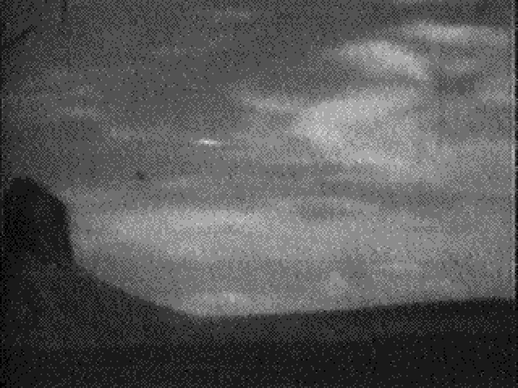
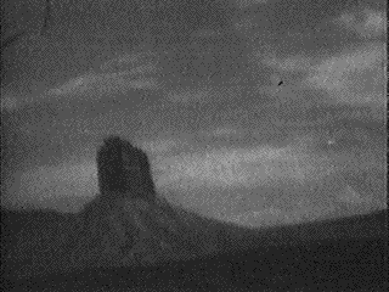

Le système d'exploitation utilisé pour piloter la machine PDP-1 de Digital est
le 1er à introduire le concept de temps partagé ou time sharing. L'opérateur tape les instructions
sur un clavier pour commander le PDP.
Utilisation des 2 premiers systèmes de CAO : SketchPad, du laboratoire Lincoln du MIT, et DAC-1, de General Motors.
une commission d'experts est constituée par l'organisme américain d'études de standards
industriels : l'IEEE pour mettre au point de normes communes.
Publication d'une nouvelle version de ALGOL 60.
Début du développement du langage PL/1 chez IBM, sur les bases de ALGOL 60,
ForTran et COBOL.
A Piove di Sacco (Padova, Italie)Mario Salmaso
(peintre, 21 ans) prétend avoir obtenu quatre photos d'un humanoïde à côté de son ovni atterri. Les clichés sont
montrés aux journalistes locaux, mais jamais publiés. Le témoin dira plus tard que son père les avait détruites
à cause du harcèlement par les médias et le public. En il admettra à l'Italian UFO Reporter que les photos avaient été truquées, un journaliste local indiquant l'avoir aidé (à
l'époque, les médias manifestaient un grand intérêt pour les ovnis) Italian UFO Reporter n° 9, décembre 1988.
Yusuke Matsumura photographie ce qu'il décrit comme 2
objets blanchâtres et minces comme des aiguilles semblables à des nuages semblant voler au même rythme que le Boeing
727 où il se trouve Wendelle
C. STEVENS and August C. Roberts : UFO PHOTOGRAPHS Around The World - Vol. 2, UFO PHOTOARCHIVES, Tucson,
Arizona, 1985, pp. 128, 129 & 194-195.
Les 5 premiers pilotes de A-12 de la CIA (Collins, Ray, Skliar, Sullivan et Walter) arrivent à Groom LakePeebles, Curtis: Dark Eagles, Presido Press, 1995.
Le professeur Roger Jennison (Département d'Electronique de l'Université du
Kent), voyage tard dans la nuit dans un avion de New York à Washington. L'avion entre dans un orage et à un
moment l'appareil est enveloppé par une décharge électrique brillante et audible. Quelques secondes plus tard
une sphère luisante de quelque 20 cm de diamètre
émerge de la cabine de pilotage et descend l'allée centrale de d'appareil jusqu'à approximativement 50 cm de
Jennison. La boule se déplace selon une
trajectoire droite sur toute la longueur de l'allée à 75 cm au-dessus du plancher et à une vitesse relative à
l'appareil d'environ 1,5 m/s. Elle est de couleur bleue-blanche et sa luminosité apparente estimée à environ 5 à
10 W. Aucune chaleur n'est ressentie lorsqu'elle passe tout près et the limb darkening (comme celle du Soleil)
lui donne une apparence presque solide, indiquant qu'elle est optiquement opaque. Aucune asymmétrie n'est
observée dans quelque dimension de sorte qu'il est impossible de déterminer si elle tourne ou non Nature, novembre 1969 < AA&ES Magazine, 1996-06.
Josef Allen Hynek écrit dans Yale Scientific Magazine : Le témoin
moyen est au-dessus de la moyenne, honnête et sérieux. Aucun examen vraiment scientifique du phénomène ovni n'a
été entrepris malgré l'énorme volume de données brutes.
Le major Hector V. Quintanilla succède au major Robert J. Friend
à la tête du projet Blue Book.
Eté
Observation à Middletown (New York) Cas Blue Book n° 8371 non résolu.
A Glen Ellyn (Illinois), observation Cas Blue Book n° 8434 non résolu.
A Manor Farm (Charlton, Wiltshire), l'officier de police
Anthony Penny voit un objet couleur orange rayer le ciel et disparaître du
champ. Voir 16 Juillet Vallée 1969.
Le satellite Telstar 2, lancé , cesse d'émettre.
A Manor Farm (Charlton, Wiltshire), Reg Alexander, un garçon de ferme découvre dans le champ de pommes de terre et
sur un champ d'orge du fermier Roy Blanchard des marques formant une dépression en forme de cratère d'un
diamètre de 8 pieds et d'à peu près 4 pouces de profondeur. Au centre de cette dépression se trouve un
trou profond de 3 pieds et de 5 pouces à un pied de diamètre, selon les différentes appréciations.
Rayonnant du trou central, se détachent 4 fentes de 4 pieds de long et de 1 pied de large. Leonard
Joliffe, un laitier de la ferme, déclare avoir entendu une explosion, un matin, à peu près à 6 hFSR Sept-Oct 1963Vallée 1969.
Près de Sunnyvale (Californie), quatre jets de l'USAF
tentent d'intercepter un appareil en forme de disque dans les airs. D'après le rapport signé par un
observateur au sol qualifié et archivé par le NICAP, l'appareil étrange
était beaucoup trop rapide pour les jets. Il remonta dans un court virage et partit hors de vue en 3 s
environKeyhoe 1967.
A Groom Lake, un A-12 réussit à atteindre Mach 3 lors d'un vol d'essai Peebles, Curtis, Dark Eagles, Presido Press, 1995.
Le Daily Express de Londres relate l'observation de l'officier Anthony Penny 2 semaines plus
tôt Vallée 1969.
  Observation (ci-contre) au
Colorado.
À Fairfield (Illinois), une famille entière est bloquée
pendant plusieurs heures dans sa ferme par un objet lumineux éblouissant patrouillant à très basse altitude.
Le satellite Anna tombé en panne l'année précédente se remet en marche tout seul.
Le satellite Telstar 2 tombé en panne l'année précédente se remet à émettre.
Photo prise par un pilote des lignes Avena volant entre Barcelone et l'aéroport international de Maiquetia
(Venezuela). La photo a été décrite comme un canular où les ombres non cohérentes (d'après l'ombre du moteur
d'aile de l'avion et celle au sol de l'avion à droite, celle de l'ovni devrait beaucoup plus en avant à
droite) et l'ovni un bouton Fortean Picture Library
À Groom Lake, 1er vol d'un YF-12A (#1001), un
intercepteur pouvant atteindre Mach 3, basé sur la conception du A-12Peebles, Curtis, Dark Eagles, Presido Press, 1995.
Observation à Warrenville (Illinois)Cas Blue Book n° 8506 non résolu.
Observation à Saint Calen (Suisse) Cas Blue Book n°
8514 non résolu.
Observation à Susanville (Californie)Cas Blue Book n° 8548 non résolu.
Observation à Vandalia (Ohio)Cas Blue Book n° 8549 non résolu.
Observation à Bedford (Ohio) Cas Blue Book n° 8581 non résolu.
A Whidbey Island (Washington), une femme d'âge moyen voit un étrange engin avec 3
silhouettes à l'intérieur. Il s'incline, s'enfonce en partie dans le sol, grandit et part dans un éclair.
Eugenio Douglas (conducteur de camion argentin) aperçoit
devant son véhicule, sur la route, une vive lumière. Intrigué, il descend, le fusil à la main et voit un énorme
objet métallique. 3 hommes hauts de 4 m en sortent alors et se dirigent vers lui. Il tire quelques coups de feu
et s'enfuit. À plusieurs reprises, suivi par l'ovni, il recevra un étrange "rayon" qui lui donnera des
démangeaisons.
Assassinat de John Fitzgerald Kennedy à Dallas (Texas). Le
vice-président Lyndon
Baines Johnson lui succède.
1er vol d'une fusée Atlas-Centaur.
Observation à McMinnville (Oregon) Cas Blue Book n° 8647 non résolu
Observation dans le Pacifique (40' -00" Nord 175' 54" Ouest) Cas Blue Book n° 8654 non résolu.
À la base Aquire Cerda, observation par neuf témoins.
À Oklahoma City, observation de divers témoins dont 2 patrouilles de police.
Dans le Dakota du Sud, observation d'un carrousel de lumières par 10000 témoins.
À Cuernavaca, les lumières de la ville s'éteignent et un ovni est vu par de nombreux
témoins.
Au-dessus de Cuba, un U-2 est approché par un ovni avant de
s'écraser en Bolivie.
Publication du récit traduit des disques découvert en . Que raconte ce récit ? Qu'un vaisseau
spatial aurait atterri dans la région de Bayan-Khara Uula, il y a 12000 ans de cela et qu'il n'aurait jamais pu
repartir faute de carburant. Les tribus locales n'auraient pas accepté les extraterrestres et auraient fini par les
massacrer presque en totalité. Les extraterrestres survivants auraient cependant laissé des traces de leur passage
et 2 tribus, les Hams et les Dropas (des êtres
fragiles, atteignant environ 1,30 m de haut et qui, jusqu'à ce jour, ont résisté à toute tentative de
classification ethnique) seraient issus d'un métissage entre les naufragés de l'espace et les indigènes de
l'époque.